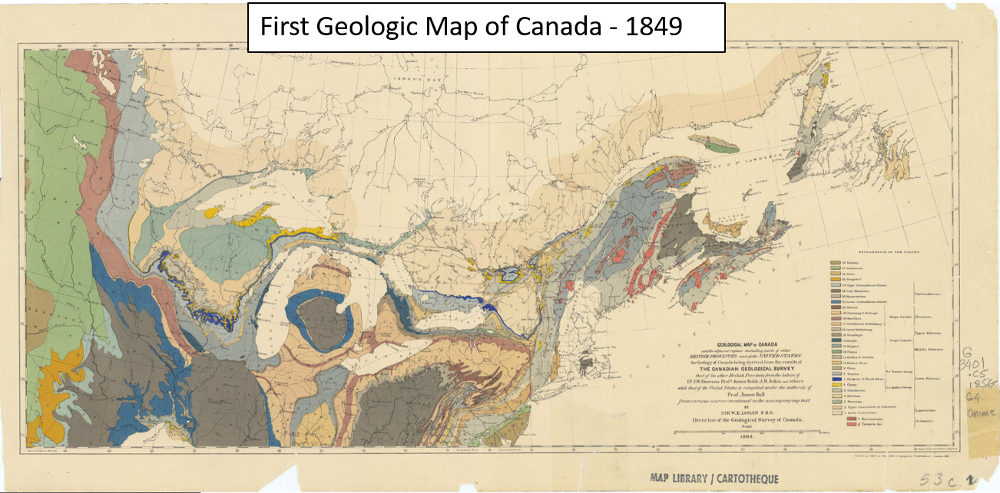
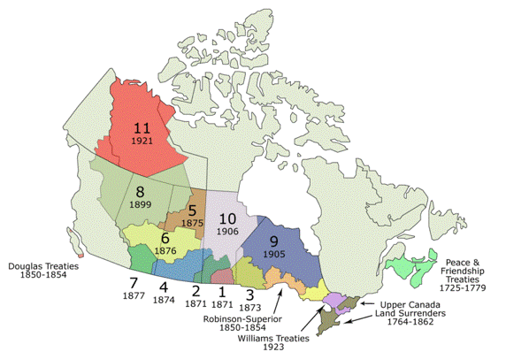
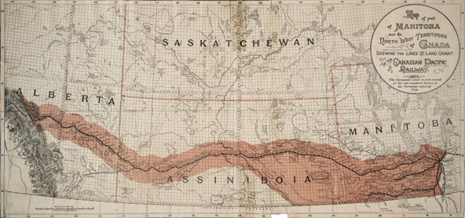
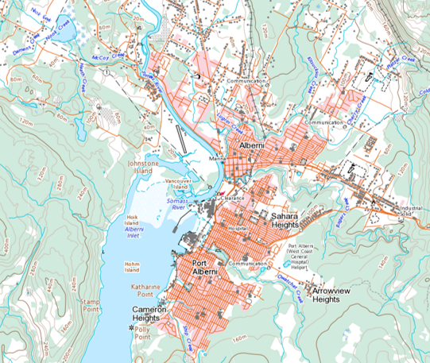

Canada’s first scientific agency, founded in 1842. The GSC mapped resources and promoted expansion.
Building on GSC Surveys, the Canadian Government "negotiated" the numbered treaties. They used GSC maps to identify and "claim" most valuable land.

RCMP were created to enforce treaties and displace Indigenous people.

Subsequently, the CP was granted 25 million acres of valuable land and sold it for $2.50/acre to European colonists.
Mapped suitability of lands for: Agriculture, forestry, recreation and wildlife.
Led to the creation of the first GIS:
-First digital geographic database
-Advances in spatial analysis
